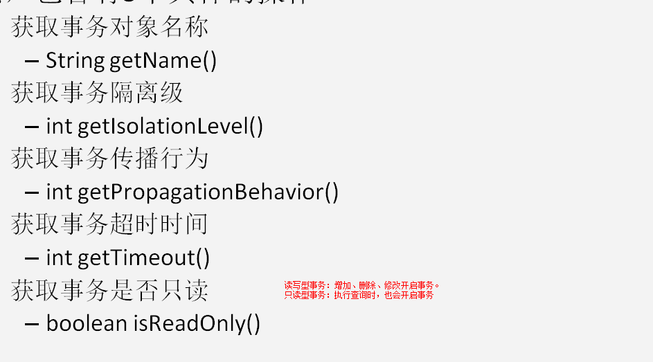

一、事务控制

- 动态代理：
- 特点：字节码随用随创建，随用随加载
- 作用：不修改源码的基础上对方法增强
- 分类：
- 基于接口的动态代理
- 涉及的类：Proxy
- 提供者：JDK管方
- 使用Proxy类中的newProxyInstance方法创建
- newProxyInstance方法的参数
- ClassLoader:类加载器，用于加载代理对象字节码，使用和被代理对象相同的类加载器
- Class[]：字节码数组，他是用于让代理对象和被代理对象有相同方法
- InvocationHandler：用于提供增强的代码，他是让我们写如何代理，我们一般都实现一个接口的实现类，通常情况下使用匿名内部类
- 被代理类最少实现一个接口，如果没有则不能使用
- 基于子类的动态代理
- 设计的类：Enhancer
- 提供者：第三方cglib库
- 使用Enhancer类中的create方法创建代理对象
- 被代理类不能是最终类
- create方法的参数
- Class：字节码，他是用于指定被代理对象的字节码
- Callback：用于提供增强的代码，一般写的都是该接口的子接口实现类：MethodInterceptor
二、AOP
- 概念：全称是 Aspect Oriented Programming 即：面向切面编程。
- 简单的说它就是把我们程序重复的代码抽取出来，在需要执行的时候，使用动态代理的技术，在不修改源码基础上，对我们的已有方法进行增强。
- 作用：
- 在程序运行期间，不修改源码对已有方法进行增强。
- 优势：
- 减少重复代码
- 提高开发效率
- 维护方便
- spring中的AOP
- Joinpoint( 连接点)：
- 所谓连接点是指那些被拦截到的点。在 spring 中,这些点指的是方法,因为 spring 只支持方法类型的连接点。
- Pointcut（切入点）：
- 所谓切入点是指我们要对哪些 Joinpoint 进行拦截的定义，也就是会增强的连接点
- Advice( 通知/ 增强):
- 所谓通知是指拦截到 Joinpoint 之后所要做的事情就是通知
- 通知的类型：前置通知,后置通知,异常通知,最终通知,环绕通知。

- Introduction（引介）
- 引介是一种特殊的通知在不修改类代码的前提下, Introduction 可以在运行期为类动态地添加一些方法或 Field。
- Target(目标对象）：代理的目标对象。
- Weaving( 织入):
- 是指把增强应用到目标对象来创建新的代理对象的过程
- spring 采用动态代理织入，而 AspectJ 采用编译期织入和类装载期织入
- Proxy（代理）:
- 一个类被 AOP 织入增强后，就产生一个结果代理类。
学习spring中的aop要明确的事：
a 、开发阶段（我们做的）
编写核心业务代码（开发主线）：大部分程序员来做，要求熟悉业务需求。
把公用代码抽取出来，制作成通知。（开发阶段最后再做）：AOP 编程人员来做。
在配置文件中，声明切入点与通知间的关系，即切面。：AOP 编程人员来做。
b 、运行阶段（Spring 框架完成的）
Spring 框架监控切入点方法的执行。一旦监控到切入点方法被运行，使用代理机制，动态创建目标对
象的代理对象，根据通知类别，在代理对象的对应位置，将通知对应的功能织入，完成完整的代码逻辑运行
- spring中基于xml的AOP配置
- 把通知Bean也交给spring来管理
- 使用aop:config标签表名开始AOP的配置
- 使用aop:aspect标签表名配置切面
- id属性：是给切面提供一个唯一标识
- ref属性：是指定通知类bean的Id
- 在aop:aspect标签的内部使用对应标签来配置通知的类型
- aop:before：标识配置前置通知
- method属性：用于指定Logger类中哪个方法是前置通知
- printcut属性：用于指定切入点表达式，该表达式的含义是针对业务层中哪些方法增强
- 切入点表达式写法：
- 关键字：execution(表达式)
- 表达式：
- 访问修饰符 返回值 包名.包名.....类名.方法名(参数列表)
- <aop:before method="printLog" pointcut="execution(public void com.vaught.utils.Logger.printLog())"></aop:before>
- 访问修饰符可以省略
- 返回值可以使用通配符
- 包名可以使用通配符，表示任意包，有几集包就写几个*
- 包名可以使用..表示当前包和子级
- 类名和方法名都可以使用*号实现通配
- 参数列表：
- 可以直接写数据类型
- 基本类型直接写名称
- 引用类型写包名.类名的方式
- 全通配写法：* *..*.*(..)
- 切到业务层实现类下的所有方法* com.vaught.service.impl.*.*(..)
<!--配置AOP-->
<aop:config>
<!--配置切面 -->
<aop:pointcut id="ptt" expression="execution(* com.vaught.service.impl.*.*(..))"></aop:pointcut>
<aop:aspect id="logAdvice" ref="logger">
<!-- 配置通知的类型，并且建立通知方法和切入点方法的关联-->
<aop:before method="printLogBefore" pointcut-ref="ptt"></aop:before>
<aop:after-returning method="pringLogAfterReturn" pointcut-ref="ptt" ></aop:after-returning>
<aop:after-throwing method="printLogAfterThrow" pointcut-ref="ptt"></aop:after-throwing>
<aop:after method="printLogAfter" pointcut-ref="ptt"></aop:after>
</aop:aspect>
</aop:config>
<!--配置事务通知-->
<tx:advice id="txAdvice" transaction-manager="transactionManager">
<tx:attributes>
<tx:method name="*" propagation="REQUIRED" read-only="false"/>
<tx:method name="find*" propagation="SUPPORTS" read-only="true"></tx:method>
</tx:attributes>
</tx:advice>
<!--配置aop-->
<aop:config>
<aop:pointcut id="pt1" expression="execution(* com.itheima.service.impl.*.*(..))"></aop:pointcut>
<aop:advisor advice-ref="txAdvice" pointcut-ref="pt1"></aop:advisor>
</aop:config>
- 环绕通知
- 问题：
- 当我们配置了环绕通知之后，切入点方法没有执行，而通知方法执行了。
- 分析：
- 通过对比动态代理中的环绕通知代码，发现动态代理的环绕通知有明确的切入点方法调用，而我们的代码中没有。
- 解决：
- Spring框架为我们提供了一个接口：ProceedingJoinPoint。该接口有一个方法proceed()，此方法就相当于明确调用切入点方法
- 该接口可以作为环绕通知的方法参数，在程序执行时，spring框架会为我们提供该接口的实现类供我们使用
- spring中的环绕通知：它是spring框架为我们提供的一种可以在代码中手动控制增强方法何时执行的方式。
三、spring中的JdbcTemplate
- 它是 spring 框架中提供的一个对象，是对原始 Jdbc API 对象的简单封装。spring 框架为我们提供了很多的操作模板类
- 操作关系型数据的：
- JdbcTemplate
- HibernateTemplate
- 操作 nosql 数据库的
- RedisTemplate
- 操作消息队列的
- JmsTemplate
四、事务


1.事务的传播行为
REQUIRED:如果当前没有事务，就新建一个事务，如果已经存在一个事务中，加入到这个事务中。一般的选
择（默认值）
SUPPORTS:支持当前事务，如果当前没有事务，就以非事务方式执行（没有事务）
MANDATORY：使用当前的事务，如果当前没有事务，就抛出异常
REQUERS_NEW:新建事务，如果当前在事务中，把当前事务挂起。
NOT_SUPPORTED:以非事务方式执行操作，如果当前存在事务，就把当前事务挂起
NEVER:以非事务方式运行，如果当前存在事务，抛出异常
NESTED:如果当前存在事务，则在嵌套事务内执行。如果当前没有事务，则执行 REQUIRED 类似的操作。
2.配置事务属性：
isolation:用于指定事务的隔离级别，默认值是DEFAULT，表示使用数据库的默认隔离级别
no-rollback-for：用于指定一个异常，当产生该异常时，事务不回滚，产生其它异常时回滚，没有默认值，表示任何异常都回滚
propagation:用于指定事务的传播行为，默认值是REQUIRED，表示一定会有事务，增删改的选择，查询 可以选择SUPPORTS
read-only:用于指定事务是否只读，只有查询方法才能设置为true，默认值是false，表示读写
rollback-for:用于指定一个异常，当产生该异常时，事务回滚，产生其他异常时，事务不回滚，默认回滚
timeout:用于指定事务的超时时间，默认值是-1，表示永不超时，如果指定了数值，则以秒为单位